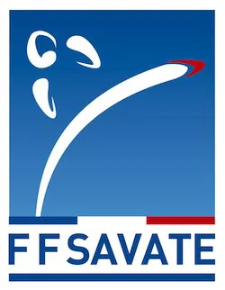
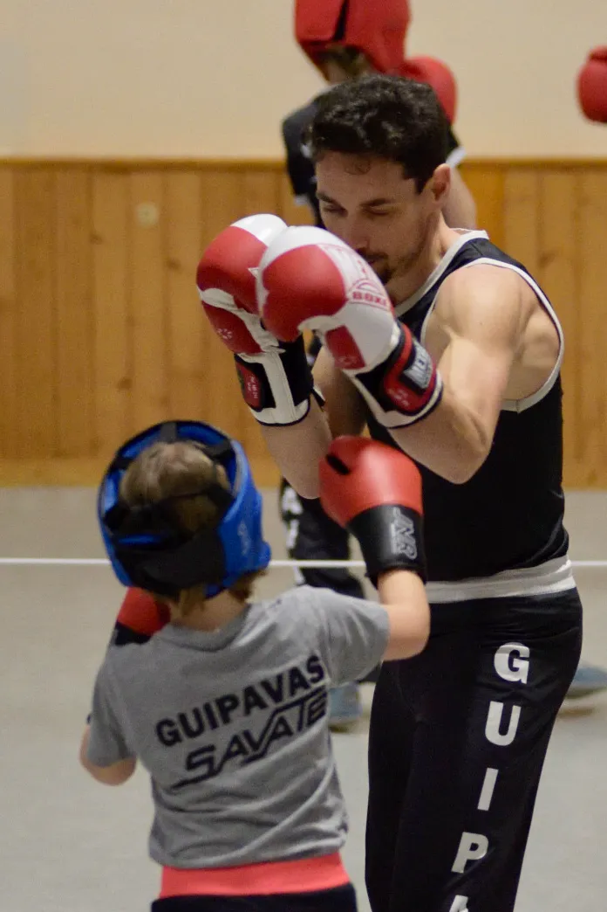

<section id="savate" data-title="Savate">
    <div class="hero">
        <div class="hero-body">
            <h1 id="club" class="title is-2">Le Savate Boxe Française</h1>
            <div class="columns is-centered is-vcentered content">
                <figure class="column is-2 image">
                    <a href="https://www.ffsavate.com">
                        <picture>
                            <source srcset="images/logo-ffsavate.webp" type="image/webp">
                            <source srcset="images/logo-ffsavate.jpg" type="image/jpeg">
                            
                        </picture>
                    </a>
                </figure>

                <div class="column is-8 content">
                    <p>
                        La savate boxe française est un sport de combat de percussion qui consiste, pour deux adversaires équipés de gants et de chaussures spéciales, à se porter des coups avec les poings et les pieds. Elle est apparue au XIXe siècle dans la tradition de l'escrime française, dont elle a repris le vocabulaire et l'esprit. Connue dès son apparition sous le nom de « savate » ou « art de la savate », elle a été, tout au long du XXe siècle, désignée par le nom de « boxe française », puis finalement renommée officiellement « savate boxe française » en 2002. C'est actuellement une discipline internationale qui appartient au groupe des boxes pieds-poings.
                    </p>

                    <p>
                        Source <a href="https://fr.wikipedia.org/wiki/Savate_(sport_de_combat)">wikipedia</a>.
                    </p>
                </div>

                <figure class="column is-2 image">
                    <picture>
                        <source srcset="images/sylvain.webp" type="image/webp">
                        <source srcset="images/sylvain.png" type="image/png">
                        
                    </picture>
                </figure>
            </div>

            <div class="section">
                <h1 id="essai" class="title is-2">Essayer la Boxe Française</h1>
                <div class="content">
                    <p>
                        Si vous souhaitez essayer la boxe française, nous vous proposons de nous rejoindre pour <b style="color: blue;">2 cours d'essai</b>.
                    </p>

                    <table class="table">
                        <thead>
                            <tr>
                                <th></th>
                                <th>Pour un essai</th>
                                <th>Pratique régulière</th>
                                <th>Pratique intensive ou pour les compétitions</th>
                            </tr>
                        </thead>
                        <tbody>
                            <tr>
                                <th>Tenue</th>
                                <td>Une tenue de sport souple</td>
                                <td>Une tenue de sport souple</td>
                                <td>Une tenue de savate (voir avec le club)</td>
                            </tr>
                            <tr>
                                <th>Chaussures</th>
                                <td>Chaussures de sport propres</td>
                                <td>Chaussures légères uniquement utilisées à l'intérieur</td>
                                <td>Chaussures pour la pratique de la Savate (de marque Rivat ou Isba)</td>
                            </tr>
                            <tr>
                                <th>Protections</th>
                                <td>Nous prêtons des gants et<br/> un casque si nécessaire</td>
                                <td colspan="2">
                                    <ul>
                                        <li>Des gants à vous avec des mitaines ou des bandes</li>
                                        <li>Un protège-dents (obligatoire)</li>
                                        <li>Coquille (obligatoire)</li>
                                        <li>Protège-poitrine pour les femmes (obligatoire pour les adultes)</li>
                                    </ul>
                                </td>
                            </tr>
                            <tr>
                                <th>Accessoires</th>
                                <td colspan="3">Une gourde</td>
                            </tr>
                        </tbody>
                    </table>
                </div>

                <h1 id="assaut" class="title is-2">Assaut</h1>
                <div class="content">
                    <p>
                        C'est une forme de rencontre qui oppose deux tireurs (les pratiquants de la savate) à la « touche », où toute puissance des coups est exclue. La précision, la maîtrise technique et le style sont les critères d'évaluation les plus importants dans les rencontres où toute recherche de hors-combat est totalement proscrite.
                    </p>

                    <p>
                        Le <a href="club.html">club</a> propose la pratique de la savate en mode <span class="has-text-weight-bold">assaut</span>.
                    </p>
                </div>

                <h1 id="combat" class="title is-2">Combat</h1>
                <div class="content">
                    <p>
                        À l’inverse de l’assaut, dans le combat, c’est la puissance et l’efficacité des coups qui sont à privilégier. L’objectif est ici de déclarer son adversaire <span class="has-text-weight-bold">hors-combat</span> ou de provoquer un K.O..
                    </p>
                </div>

                <h1 id="grades" class="title is-2">Grades</h1>
                <div class="content">
                    <p>
                        La Savate propose une progression par grades de couleurs nommés <span class="">Gants</span>. Chaque gant de couleur est associé à une compétence à acquérir pour obtenir le grade suivant.
                    </p>

                    <table class="table table is-bordered- is-striped is-narrow is-hoverable is-fullwidth">
                        <thead>
                            <tr>
                                <th>Couleur</th>
                                <th>Thème</th>
                                <th>Niveau</th>
                                <th>Compétition</th>
                                <th>Fiche</th>
                            </tr>
                        </thead>
                        <tbody>
                            <tr>
                                <td class="is-link">Bleu</td>
                                <td>Je touche et je ne suis pas touché.</td>
                                <td>Initiation</td>
                                <td></td>
                                <td><a href="ressources/Grades/1-gant-bleu.pdf">PDF</a></td>
                            </tr>
                            <tr>
                                <td class="is-success">Vert</td>
                                <td>Je ne suis pas touché et je touche.</td>
                                <td>Initiation</td>
                                <td></td>
                                <td><a href="ressources/Grades/2-gant-vert.pdf">PDF</a></td>
                            </tr>
                            <tr>
                            <td class="is-danger">Rouge</td>
                            <td>Je ne suis pas touché et je touche en me déplaçant.</td>
                            <td>Perfectionement</td>
                            <td>Open Assaut</td>
                            <td><a href="ressources/Grades/3-gant-rouge.pdf">PDF</a></td>
                            </tr>
                            <tr>
                                <td>Blanc</td>
                                <td>Je touche avant d'être touché.</td>
                                <td>Parfectionnement</td>
                                <td></td>
                                <td><a href="ressources/Grades/4-gant-blanc.pdf">PDF</a></td>
                            </tr>
                            <tr>
                                <td class="is-warning">Jaune</td>
                                <td>Je pertube pour toucher (feintes).</td>
                                <td>Maîtrise</td>
                                <td>Combat</td>
                                <td><a href="ressources/Grades/5-gant_jaune.pdf">PDF</a></td>
                            </tr>
                            <tr>
                                <td>Argent</td>
                                <td>Technique</td>
                                <td>Expertise</td>
                                <td>Championnat de France</td>
                                <td></td>
                            </tr>
                        </tbody>
                    </table>
                </div>
            </div>
        </div>
    </div>
</section>